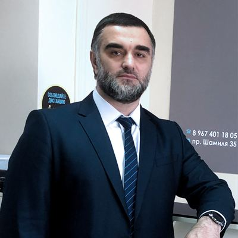
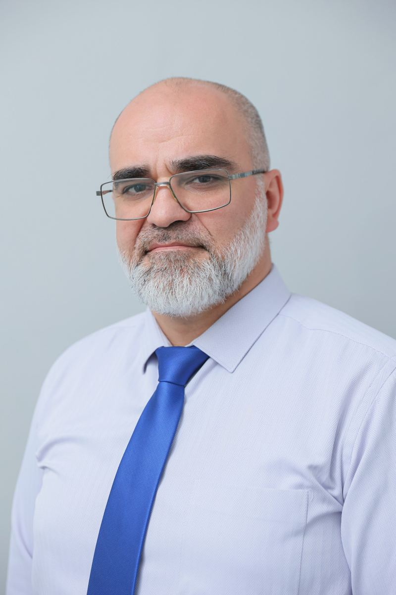
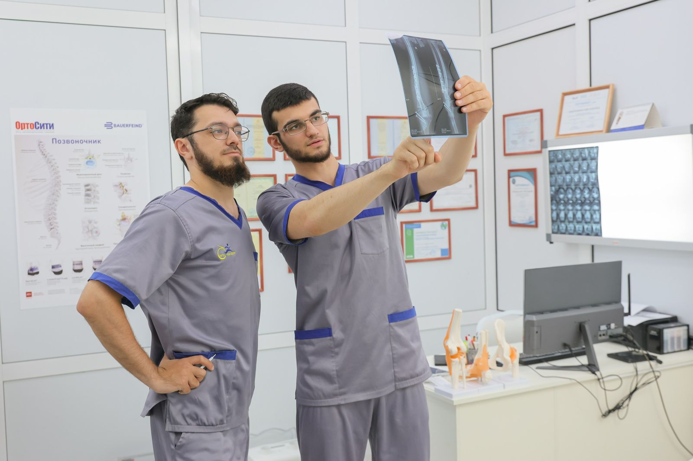
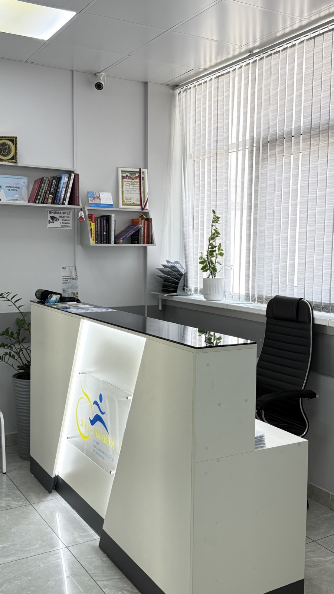
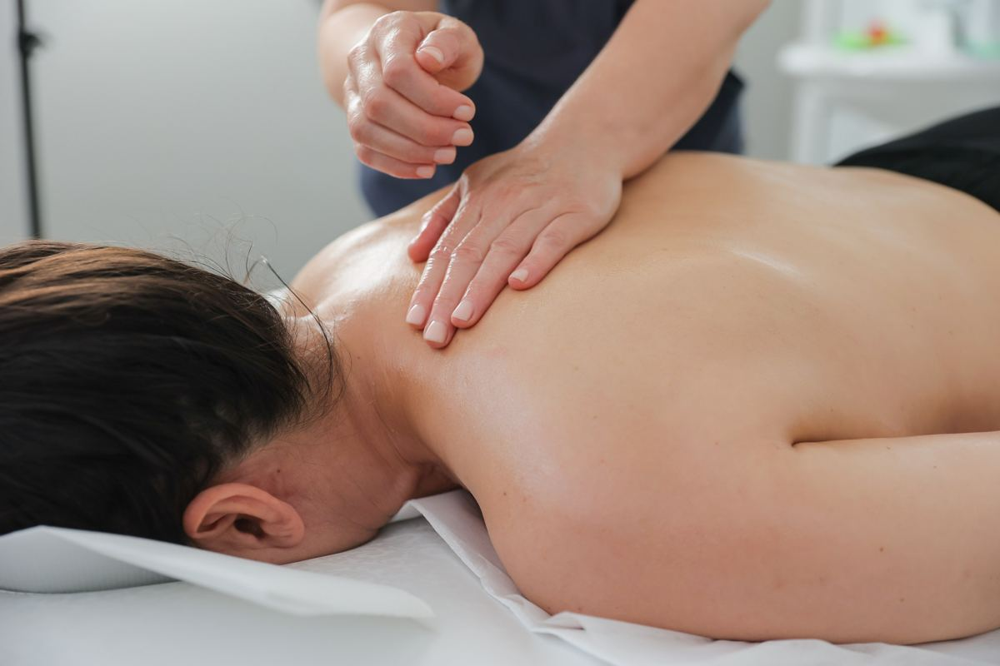
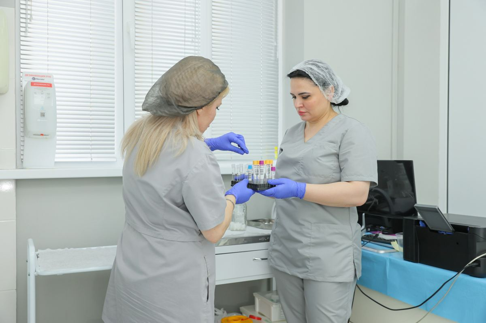
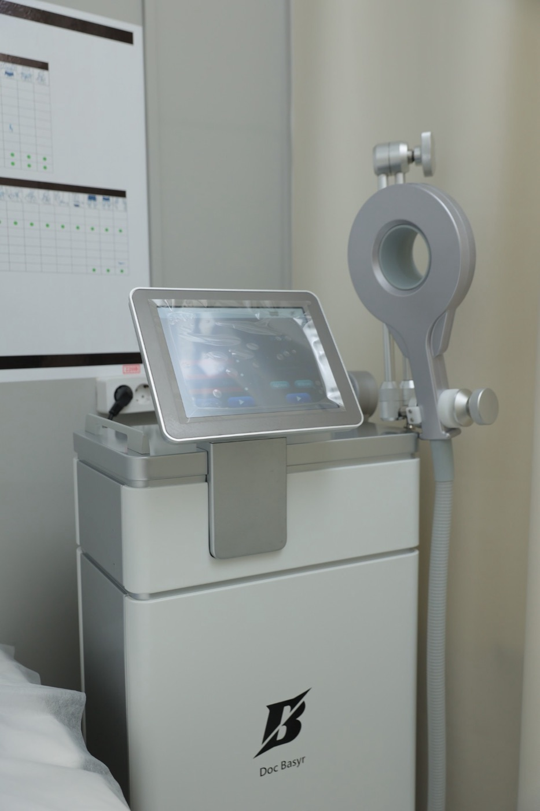
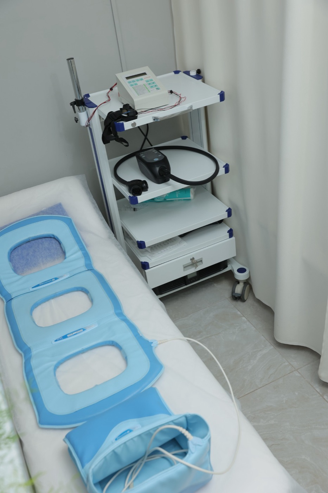
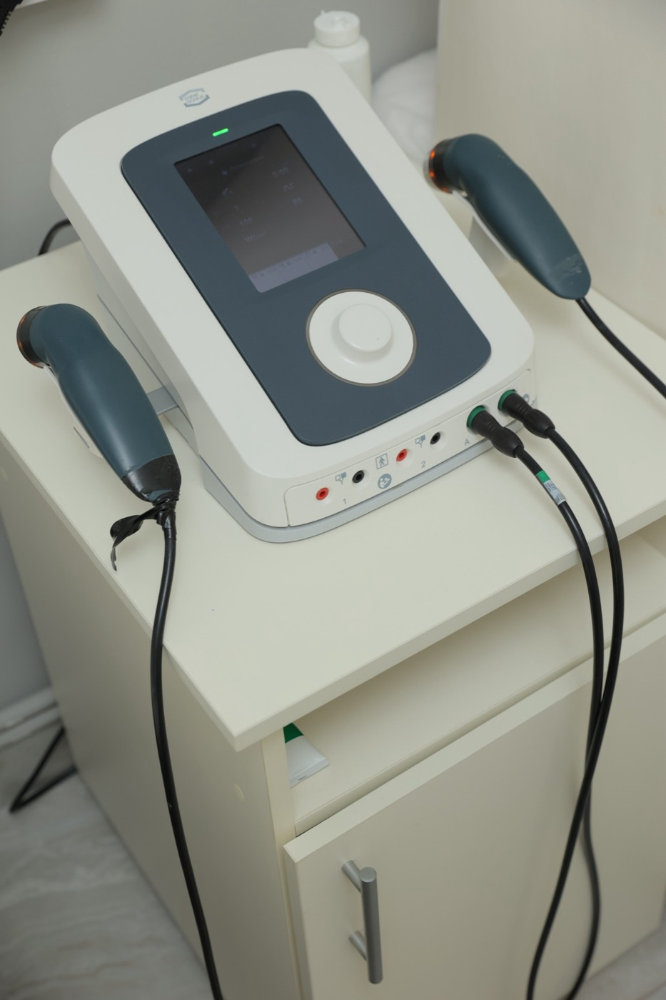
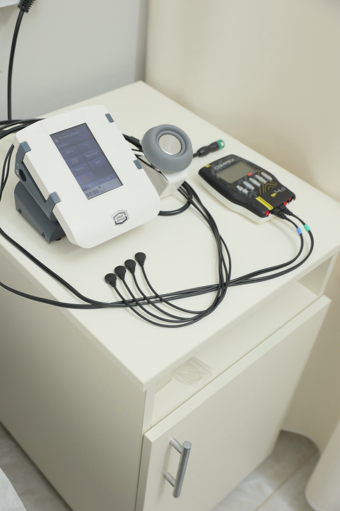

Магомеддов Абдулла-Гаджи Абумуслимович
Основатель проекта «Орто-Рекавери»
нужно от клиники
2–3 фразы: почему открыли центр и чем он отличается.
Принцип центра
Для двух пациентов с одинаковым диагнозом нельзя использовать одну и ту же программу: для одного она будет слишком лёгкой, для другого — невыполнимой. Поэтому план лечения мы составляем под вас.
О центре

2–3 фразы: почему открыли центр и чем он отличается.

«Наша главная цель — не просто оправдать ваше доверие, а превзойти ваши ожидания. Ведь ваше здоровье и доверие — наша главная ценность!»
Как лечим

Нам доверяют
Мы не публикуем отзывы и благодарности пациентов на своём сайте — так требует закон о рекламе медицинских услуг. Отзывы собирает и проверяет независимая площадка ПроДокторов: клиника не может их удалить или изменить. Виджет загружается с сервера prodoctorov.ru и использует его cookie.
Все отзывы и площадки →Применяем методы, доказавшие свою эффективность и безопасность.
Зарегистрированное медицинское учреждение с необходимыми лицензиями.
Осторожный подход: только безоперационные методы восстановления.
В сложных случаях вас посмотрят несколько специалистов центра, чтобы поставить точный диагноз.
Первый этаж, вход без ступенек, парковка у входа.
Бесплатно — чтобы визит к врачу был спокойнее.
Экскурсия







Фото из кабинетов центра. Аппарат и параметры процедуры подбирает врач по показаниям.






Общество с ограниченной ответственностью «Центр восстановительной медицины «ОРТО-РЕКАВЕРИ» (ОГРН 1210500012392, ИНН 0572029293). Адрес: 367015, Республика Дагестан, г.о. город Махачкала, г. Махачкала, пр-кт Имама Шамиля, д. 35А, этаж 1. Лицензия на медицинскую деятельность № Л041-01172-05/00620772 от 12.10.2022, выдана: Министерство здравоохранения Республики Дагестан. Электронная почта для обращений: orto_recovery1805@mail.ru. Информация на сайте не является публичной офертой и не заменяет консультацию врача. Демо-версия сайта, подготовлена для обсуждения с центром.
Пример концепции. Фото врачей, процедур и кабинетов — центра (фотосессия 2024 со старого сайта); фото на первом экране, «Стопа», «Реабилитация» и борьба — Unsplash. Цены — прайс клиники.